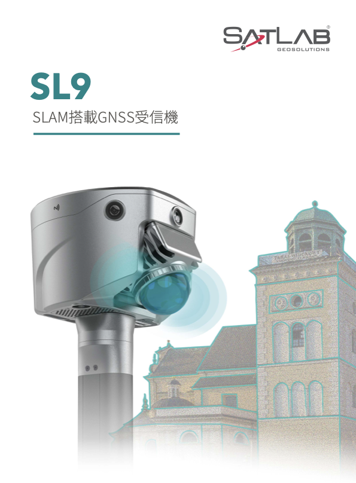

高速な3D取得
歩きながら周辺環境をスキャンし、点群データ取得の導入をわかりやすく紹介します。
SL9は建設、測量、屋外・屋内の空間取得に向けたSLAM搭載GNSS受信機です。展示会場では、製品概要と彩页PDFをすぐに確認できます。
歩きながら周辺環境をスキャンし、点群データ取得の導入をわかりやすく紹介します。
RTKワークフローに対応し、屋外現場での位置情報付きデータ取得を支援します。
iPad表示やQRコードアクセスから、資料閲覧とPDFダウンロードまでスムーズに誘導します。
施工進捗、現況記録、出来形確認のための空間データ取得。
屋外・屋内を横断したマッピング用途への展開。
